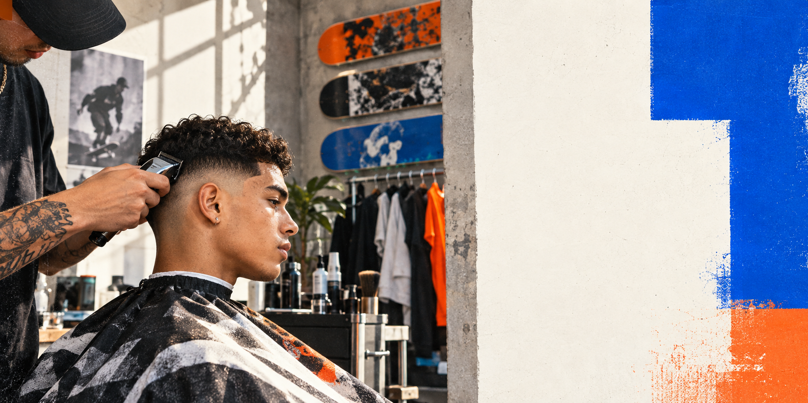

Corte personalizado
Forma y acabado alineados con tu estilo.

VOL. 24 · PORT ST. LUCIE
Barbería para gente que construye su estilo desde la música, la calle y lo que se pone cada mañana.
THE CUT LIST
El punto de partida es tu cabello, tu rutina y cómo quieres verte. No una plantilla.
Forma y acabado alineados con tu estilo.
Transición limpia, detalle y movimiento.
Balance y terminación para cerrar el look.
*Servicios, duración, precios y disponibilidad requieren confirmación de Noise Cuts.
NOISE IS IDENTITY
Streetwear. Skateboard. Hip-hop. Fashion. Noise Cuts convierte esas referencias en una experiencia relajada, directa y abierta a cualquier cliente.
“Me gusta cortar cualquier tipo de cliente.”— Noise Cuts
PORT ST. LUCIE
REQUEST TO BOOK
Envía tu preferencia. Noise Cuts revisa la solicitud antes de confirmar. No hay cobro ni reserva automática.
Ver panel del barbero ↗